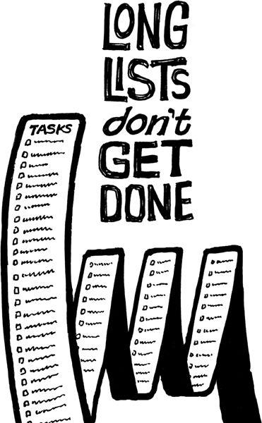

{% include JB/setup %}
{% raw %}
<div>

<h2 id="filepos134169" class="calibre19"><span class="calibre2"><a class="calibre13"></a><strong class="calibre14">Your estimates suck</strong></span></h2><div class="calibre4"></div>
<p class="calibre7">We're all terrible estimators. We think we can guess how long something will take, when we really have no idea. We see everything going according to a best-case scenario, without the delays that inevitably pop up. Reality never sticks to best-case scenarios.</p>
<p class="calibre17">That's why estimates that stretch weeks, months, and years into the future are fantasies. The truth is you just don't know what's going to happen that far in advance.</p>
<p class="calibre17">How often do you think a quick trip to the grocery store will take only a few minutes and then it winds up taking an hour? And remember when cleaning out the attic took you all day instead of just the couple of hours you thought it would? Or sometimes it's the opposite, like that time you planned on spending four hours raking the yard only to have it take just thirty-five minutes. We humans are just plain <em class="italic1">bad</em> at estimating.</p>
<p class="calibre17">Even with these simple tasks, our estimates are often off by a factor of two or more. If we can't be accurate when estimating a few hours, how can we expect to accurately predict the length of a "six-month project"?</p>
<p class="calibre17">Plus, we're not just a little bit wrong when we guess how long something will take--we're a lot wrong. That means if you're guessing six months, you might be <em class="italic1">way</em>
<a class="calibre16"></a>off: We're not talking seven months instead of six, we're talking one year instead of six months.</p>
<p class="calibre17">That's why Boston's "Big Dig" highway project finished five years late and billions over budget. Or the Denver International Airport opened sixteen months late, at a cost overrun of $2 billion.</p>
<p class="calibre17">The solution: Break the big thing into smaller things. The smaller it is, the easier it is to estimate. You're probably still going to get it wrong, but you'll be a lot less wrong than if you estimated a big project. If something takes twice as long as you expected, better to have it be a small project that's a couple <em class="italic1">weeks</em> over rather than a long one that's a couple <em class="italic1">months</em> over.</p>
<p class="calibre17">Keep breaking your time frames down into smaller chunks. Instead of one twelve-week project, structure it as twelve one-week projects. Instead of guesstimating at tasks that take thirty hours or more, break them down into more realistic six-to-ten-hour chunks. Then go one step at a time.</p>
<p class="calibre3"><a class="calibre16"></a></p><div class="calibre4"></div>
</div>

{% endraw %}

